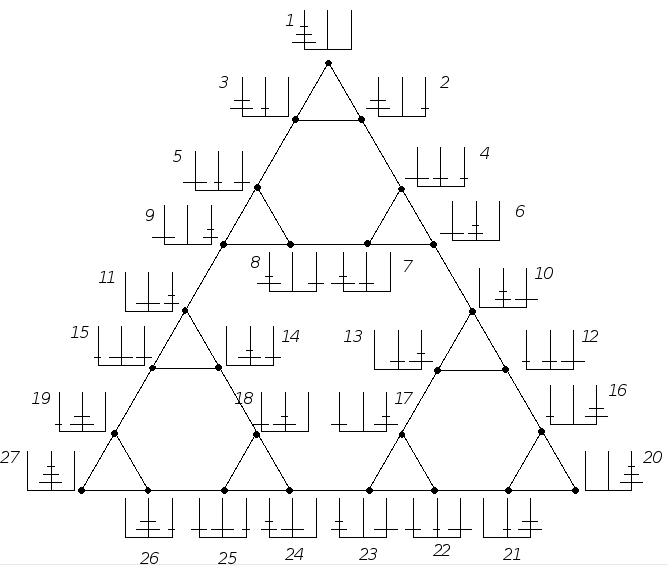

Week 10: higher cognition, III
Lecture 10.2: problem-solving; creativity

"what shall I do next?"
- problem spaces and search
- simulation and counterfactuals
- meta-problem solving
- creativity
"All organisms with complex nervous systems are faced with the
moment-by-moment question that is posed by life: What shall I do next?"
S. Savage-Rumbaugh and R. Lewin
Kanzi (1994)
[This already came up in Week 8, the context of language.]
PROBLEM SPACES: the state space of the Towers of Hanoi problem

Problem solving as state-space navigation —
[Recall
Lecture 7.2]

the Tic Tac Toe problem space
A very small portion of the Tic Tac Toe problem space,
which has the form of
a tree (a
directed graph without cyclical paths).
some problem spaces compared
| game | state space
size | remarks |
| Towers of Hanoi |
27 |
For 3 disks |
| Tic Tac Toe |
26,830 |
|
| checkers |
1031 |
Checkers has been solved: perfect play by both sides results in a draw.
|
| chess |
10123 |
Estimated. Compare to the estimated number of atoms in the
Universe: 1079 |
| Go |
2.1⋅10170 |
|
heuristic search
Chess search algorithms explore the
problem state space, which has the form of a tree —
The state space is too large to explore
exhaustively; heuristics are used to evaluate the
possible moves.
The poorer moves are discarded (the tree is "pruned"), and the
optimal move (given the information at hand) is chosen.
The
AlphaGo program — the first to beat the human Go
world champion — used reinforcement learning to train itself in
deep heuristic tree search.
search and exploration v. exploitation in space, mind, and society (Hills et al., 2015)

Key concepts:
- search
- in physical spaces
- in abstract spaces
- balancing exploitation and exploration
Challenges and limitations:
real-life (as opposed to board-game) problem solving is EMBODIED and SITUATED


In the Tucker and Ellis task (which is related to the celebrated
drinking problem), the subject is
required to answer, in each trial, the question "Is this a
pitcher?" as rapidly as possible.
Half the subjects answer "yes" by pressing a button on the right and half
by pressing a button on the left.
The participants respond faster when the handle is on the same
side as the "yes" button
(cf. stimulus-response compatibility).
embodied problem solving and SIMULATION
The diagram shows two interlocking gears. Will the knob on the leftmost
gear mesh with the groove on the right gear if the gears are rotated
inward?
[From Mechanical reasoning by mental simulation,
Mary Hegarty, Trends
in Cognitive Sciences 8:280-285 (2004).]
embodied problem solving and simulation
The diagram depicts a pulley system. When the free end of the rope is
pulled, will the lower pulley turn clockwise?
[From Mechanical reasoning by mental simulation,
Mary Hegarty, Trends in Cognitive Sciences 8:280-285 (2004).]
It takes subjects longer to infer the direction of rotation for the lowest
pulley, compared to the middle one.
embodied problem solving and simulation
The diagram shows two glasses of water. The glasses are the same
height and filled to the same water level. If the glasses are
tilted, will the water pour out of the two glasses at the same
or different angles of tilt? If they are tilted at the same
rate, which will pour first?
[From Mechanical reasoning by mental simulation,
Mary Hegarty, Trends
in Cognitive Sciences 8:280-285 (2004).]
Subjects find it much more difficult to solve this problem when reclining
than when sitting upright.
real-world problem solving
saving Apollo 13
Problem solving in "cognition in the wild" relies on some of the same
computational principles and techniques as in artificial situations such
as chess-playing, including:
- state-space representations
- embodied simulation
- evaluation functions
- search
HOWEVER, the open-ended nature of the real-world situations makes
everything more difficult. In particular, "the" search space may be
ill-defined and "the" relevant evaluation function may be unknown.
saving Apollo 13
"Cognition in the wild" is often distributed among a
group of people —
the 19-step procedure for saving Apollo 13 was
developed [through simulation] by a large crew of engineers
at the mission control center, in close collaboration with the
spacecraft's designers and with the astronauts themselves.
A solitary "rocket scientist" is normally of very little use to
"rocket science".
Apollo 13: PROBLEM SOLVED

Right: the jury-rigged attachment for the CO2
chemical scrubber filter (square box, held together
with duct tape), which had been cannibalized from the
crippled Service Module, is shown here after its improvised
installation in the Lunar Module.
"Cognition in the wild" is often situated — apart from the
two lithium
hydroxide canisters cannibalized from the Service Module, the solution
used the following items:
- one cardboard cover to the Apollo 13 flight plan;
- one roll of gray duct tape;
- two hoses from the astronauts' suits;
- two socks
- one bungee cord.
- two* plastic bags;
*Only three were available on board.
And what if there were none?
counterfactual thinking
The tip of
the blade was on the edge of my aorta... it came out
in the New York Times the next morning that if I had sneezed I
would have died... and I want to say tonight, I want to say that
I'm happy I didn't sneeze... Because if I had sneezed, I wouldn't
have been around here in 1960 when students from all over the
South started sitting-in at lunch counters... if I had sneezed, I
wouldn't have been here in 1963 when the black people of
Birmingham, Alabama aroused the conscience of this nation and
brought into being the civil rights bill... If I had sneezed I
wouldn't have had the chance later that year in August to try
to tell America about a dream that I had had... I'm
so happy that I didn't sneeze.
Martin Luther King, Jr., in a 1968 speech
From Mental models and counterfactual thoughts about what might have
been, Ruth M. J. Byrne, TiCS 6:426-431 (2002).
counterfactual thinking in problem solving
The liquid oxygen tank, whose explosion caused the
Apollo 13 accident:
if the tank had not been dropped during transportation
(causing the fill line to bend), and if the temperature
sensor had not been damaged by being run off 65 instead of 28 volts
(causing it to fuse), the contents of the tank would not have
overheated when an in-flight "cryo-stir" was attempted, and the
explosion would have been prevented.
subject consistency in counterfactual thinking

The patterns of counterfactuals generated by different people in a given
situation are similar to each other.
A likely explanation: this is because they all reflect the same
statistical — and ultimately causal — knowledge about the world.
counterfactual thinking and creativity

You see things as they are and ask, 'Why?'
I dream things as they never were and ask, 'Why not?'
creativity: from problem solving to meta-problem solving

The generic meta-problem: realizing and evaluating the
problematicity of a given situation.
a computational path from "mere" thinking to creativity

Raven's Progressive Matrices and
other ANALOGY tests are central in any numerical
assessment to traditional definitions of general
cognitive function.
To solve matrix analogy problems such as this one, it is
necessary to carry out the following computations:
- identify the primitive elements;
- determine the relevant features;
- describe each of the given items in terms of these;
- infer the rules that hold for each row and column;
- derive a description of the missing item;
- scan the candidate answers for an item that fits best the expected
missing item.
Can you tell which mode of reasoning (deduction, abduction,
induction, ...), if any, is used at each step?
Much as in visual scene interpretation, the information that is critical to this
analogy task has two components: the ROLES of the elements and their POSITIONS.
an opportunity for getting creative with roles and fillers in analogy problems
What is to a triangle as a triangle is to
a square?
What is to four dimensions as the Penrose triangle is to three?
What is to Greece as the Falkland Islands are to Britain?
What is to the US as the Eiffel Tower is to France?
What is to German as Shakespeare's plays are to English?
What is to 1-2-3-4-4-3-2-1 as 4 is to 1-2-3-4-5-5-4-3-2-1 ?
What is to xyz as abd is to abc?
a computational model of analogy: MetaCat (Hofstadter, 1995; Marshall, 2002)
The domain: letter string analogies.
Slipnet:
conceptual spaces.
Coderack:
procedures for SEARCHING problem spaces.
Workspace:
working memory.
search / variations on a theme / continuity in creativity
Metacat's Coderack includes the knowledge of reasonable/effective VARIATIONS
[for the letter string domain]
continuity in creativity
[from Beyond the myth of the genius, Robert Weisberg (1993)]
continuity in creativity
[from Beyond the myth of the genius, Robert Weisberg (1993)]
continuity in creativity
[from Beyond the myth of the genius, Robert Weisberg (1993)]
compare Watt's and Newcomen's steam engines

steam engineering in ancient Egypt

Opening temple doors when a fire is lit on the altar —
Cf. Arthur C. Clarke's
Third Law:
Any sufficiently advanced technology is indistinguishable from
magic.
Corollary: if a piece of technology is distinguishable from magic, it is
insufficiently advanced (by modus tollens).
the Wright brothers: the thrill of invention

| 1899 | biplane |
Chanute? Langley? |
| hinged wing | Chanute |
| wing warping | bird wing tips |
| 1900 |
dihedral angle
|
precedents |
| flat rudder | precedents |
| operator prone | [reduce drag] |
| 1901 | larger wings | [need
more lift] |
| skids | [safer landing] |
| change cloth | [more lift] |
| 1902 | fixed
tail | [stability] |
| wing shape | [wind tunnel experiments] |
| varied camber | [wind tunnel] |
| rudder shape | [wind tunnel] |
| 1903 | new
motor | adapted
auto engine |
| better propellers | [wind tunnel; trial & error] |
the Wright brothers: the thrill of invention
the Wright brothers: first in flight

first in flight


")